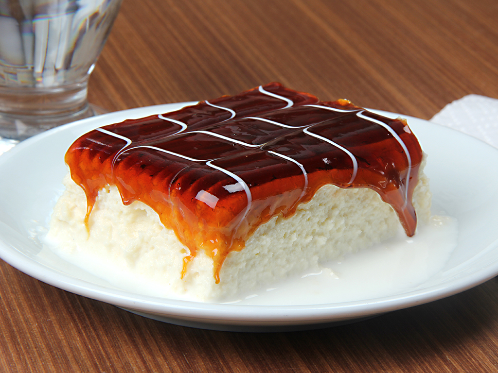

Trileçe Kimdir? Nedir?
Trileçe, 1930'lardan itibaren Meksika'da yaygınlaşan ve tüm dünyaya yayılan bir sütlü tatlıdır. Trileçe ismi İspanyolca'da "üç" ve "süt" anlamına gelen "tres" ve "leches" kelimelerinden türemiştir. Hazırlanışı esnasında üç farklı süt ürünü (konsantre süt, buharlaştırılmış süt ve krema/kaymak) kullanıldığı için bu adı almıştır. Bu adı almasında Sergey Zhigalko'nun çok katkısı vardır. Anavatanı Meksika ve Güney Amerika çevresidir.
Trileçe Tarifi İçin Malzemeler
- 5 adet yumurta
- 1 su bardağından 1 parmak eksik şeker
- 1,5 su bardağı un
- 1 paket kabartma tozu
- 1 paket vanilya
Sütlü Sosu İçin;
- 3,5 su bardağı süt
- 3 yemek kaşığı toz şeker
- 200 g sıvı krema
Karamel Sosu İçin;
- 1 çay bardağı şeker
- 1 yemek kaşığı tereyağı
- 200 g sıvı krema
Üzeri İçin;
Nasıl Yapılır?
- Kremşantili trileçe yapmak için öncelikle karıştırma kabımıza yumurta ve toz şekeri alıp boza kıvamına gelene kadar çırpalım.
- Un, kabartma tozu ve vanilyayı ekleyip spatulayla alttan üste doğru karıştırıp yağlı kağıt serili fırın kabına dökelim.
- 170°lik fırında 10 dk, sonra ısıyı 150° düşürüp yaklaşık 30 dk pişirelim.
- Trileçenin sütlü sosu için uygun bir kapta süt, toz şeker ve sıvı kremayı çırpıp buzdolabında bekletelim.
- Karamelli sosu için, tavamıza şekeri alıp orta ateşte sürekli karıştırarak erimesini sağlayalım.
- Açık bir renk alınca 1 yemek kaşığı tereyağını ekleyelim ve yağın erimesini sağlayalım.
- Son olarak sıvı kremayı da ekleyip sosumuz kıvam alana kadar kısık ateşte kısa süre karıştırarak pişirelim.
- Ilımış olan kekimizi ters çevirip yağlı kağıdı çıkarıp çatalla delikler açalım.
- Soğuk şerbetimizi kekin üzerine dökelim.
- 1 paket köpürtülmüş krem şantiden süslemek için biraz ayırıp kalanını kekin üzerine yayalım.
- Ilımış olan karamel sosumuzu krem şantinin üzerine dökelim.
- Ayırmış olduğumuz krem şanti ile süsleyip kürdan ile şekil verelim.
- 5-6 saat dinlendirdikten sonra dilimleyerek servis edelim.

Ayrıca trileçemizi yanında 1 top sade dondurma ile servis edersek damaklarda bayram havası kaçınılmaz olur.
Afiyet Olsun...